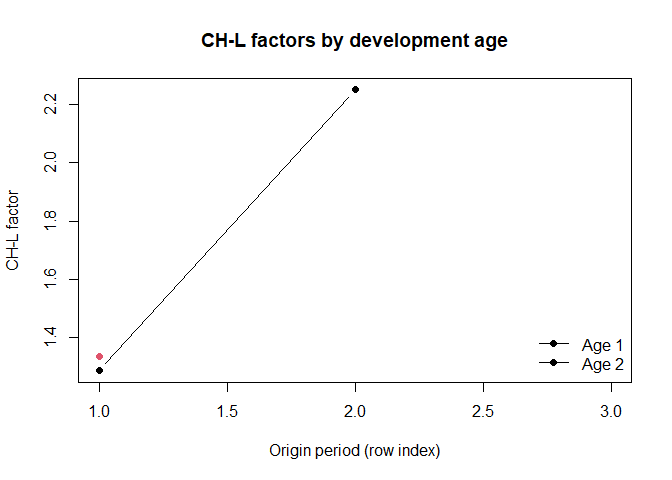

Utilities for actuarial run-off triangles and Chain-Ladder (CH-L) workflows: creation of triangles from long data, cumulative/de-cumulative transforms, CH-L factors (link ratios), averaged factors, products (ultimate multipliers) and simple visualizations.
- Website: https://ondrej-vit.github.io/vitopack/
- Bug reports: https://github.com/Ondrej-Vit/vitopack/issues
Installation
# install.packages("pak")
pak::pak("Ondrej-Vit/vitopack")Quick start
1) Build a triangle from long data
df <- data.frame(
accident = c(1,1,1,2,2,3,1),
dev = c(1,2,3,1,2,1,1),
value = c(10,20,30,40,50,60,60)
)
tri <- create_triangle(df, "accident", "dev", "value")
tri
#> [,1] [,2] [,3]
#> [1,] 70 20 30
#> [2,] 40 50 NA
#> [3,] 60 NA NA2) Cumulative / de-cumulative transforms
cum_tri <- create_cumulative_triangle(tri)
decum_tri <- create_decumulative_triangle(cum_tri)
stopifnot(identical(tri, decum_tri)) # sanity check
cum_tri
#> [,1] [,2] [,3]
#> [1,] 70 90 120
#> [2,] 40 90 NA
#> [3,] 60 NA NA3) Chain-Ladder factors (link ratios)
chl_triangle <- create_chl_coef_triangle(cum_tri)
chl_coefs <- create_chl_coefs(cum_tri, chl_length = c("full", 2))
chl_coefs
#> CH_L_lengths 0 1 2
#> 1 chain_ladder - full NA 1.636364 1.333333
#> 2 chain_ladder - 2 NA 1.636364 1.3333334) Ultimate multipliers (products over ages)
# Take the "full" row from create_chl_coefs() and compute products
full_row <- chl_coefs[chl_coefs$CH_L_lengths == "chain_ladder - full", -1, drop = FALSE]
ultimate <- create_product_coefs(full_row, name = "Ultimate")
ultimate
#> [1] "Ultimate" NA "1.33333333333333"5) Naming & simple visualization
# Name rows/columns for readability
named <- triangle_namer(chl_triangle, claim_period_names = paste0("Y", seq_len(nrow(chl_triangle))))
# Minimal static visualization (friendly to GitHub/CRAN)
ages_to_plot <- c(2, 3) # development ages (columns) to plot
matplot(
x = seq_len(nrow(named)),
y = cbind(named[, ages_to_plot[1]], named[, ages_to_plot[2]]),
type = "b", pch = 19, lty = 1,
xlab = "Origin period (row index)",
ylab = "CH-L factor",
main = "CH-L factors by development age",
ylim = range(named[, ages_to_plot], na.rm = TRUE)
)
legend("bottomright",
legend = paste("Age", ages_to_plot - 1),
lty = 1, pch = 19, bty = "n")

Average CH-L factors by development age (toy example).
For interactive Plotly charts, see:
create_chl_trg_visualization()andcreate_chl_trg_visualization_pvzp(). In README, prefer static plots for GitHub rendering.
Main functions
-
Triangle utilities:
create_triangle(),create_cumulative_triangle(),create_decumulative_triangle(),triangle_namer(),diag_reader(),diag_writer(),diag_sums(). -
CH-L workflow:
create_chl_coef_triangle(),create_chl_coefs(),create_avg_coefs(),create_product_coefs(). -
Visualization:
create_chl_trg_visualization(),create_chl_trg_visualization_pvzp().
Notes
- Conventions: diagonal numbering uses 1 = shortest, n = main (documented in
diag_reader()). - Examples use toy data; real-world usage typically works with monthly/quarterly origin & development periods.